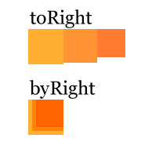

Arranging objects is a simple task but boring and very repetitve.
Usually the majority of view's code is about alignment and positioning objects on the screen.
Thinking on a way to avoid this repetition since the last year I've been coding the Arrange.
It's a simple static class with only one objective: arrange things on the screen!
A simple explanation about how it works (mainly about "to" and "by" prefixes) is the next image:
place( [box, circle, field] ).toRight( );
circle.x = box.x + box.width + circle.width * 0.5; field.x = circle.x + circle.width * 0.5;
place( [stage,box,circle,field] ).centerX().toBottom();
box.x = stage.stageWidth*.5 - box.width*.5; circle.x = stage.stageWidth*.5; field.x = stage.stageWidth*.5 - field.width*.5; circle.y = box.y + box.height + circle.height*.5; field.y = circle.y + circle.height*.5;
Pretty simple!
Arrange supports also an extra parameter which is a simple Object to provide special setting such as paddings, fixed width/height and etc (see ArrangeProperties):
place( [box,circle,field]).toRight({padding_x:5});
// or just {x:5}
var grid : Grid = place(list).vGrid( 3, {padding_x:2, padding_y:2} );
// list is an array with many sprites
// 3 is the number of columns
var grid : Grid = place(list).hGrid( 3, {padding_x:2, padding_y:2} );
// list is an array with many sprites
// 3 is the number of rows